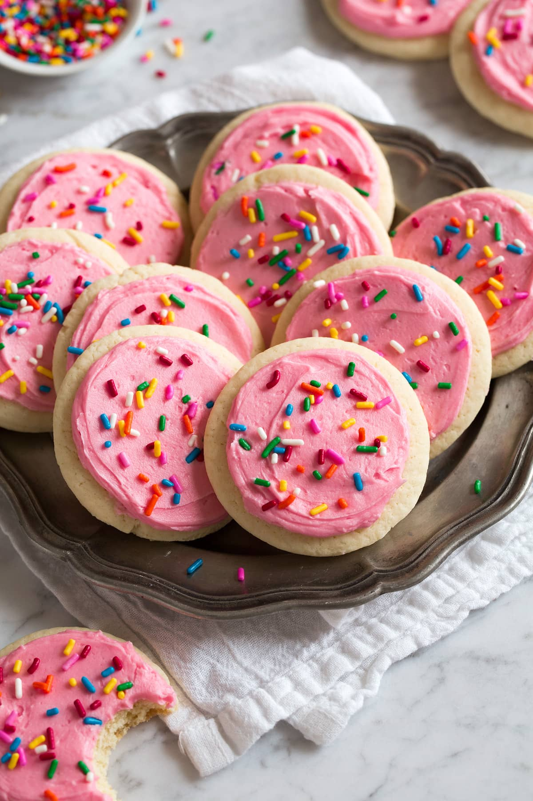

Sugar Cookie Icing

Description
This is a recipe rated 4.5 stars by 2,771 users of AllRecipes.com. It takes a total of approximately 10 mins to finish.
Ingredients
- 1 cup confectioners' sugar
- 2 teaspoons milk
- 2 teaspoons light corn syrup
- 1/4 teaspoon almond extract
- assorted food coloring
Steps
- Stir together confectioners' sugar and milk in a small bowl until smooth. Beat in corn syrup and almond extract until icing is smooth and glossy. If icing is too thick, add more corn syrup.
- Divide into separate bowls, and add food colorings to each to desired intensity. Dip cookies, or paint them with a brush.
Source: AllRecipes
Return to Homepage